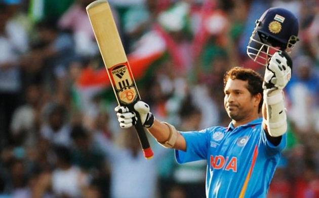

Sachin Tendulkar

Sachin Tendulkar was born on April 24,1973 on Mumbai,India.He now lives in Maharastra.He is now aged 46.His height is 5 feet 5 inches.His wife name is Anjali Tendulkar.He was married at 1995.He had played movie named Kabhi Ajnabi.He is also knowm as Little Master,Master Blaster.He is also known as'God of cricket'.
Sachin Tendulkar has the most total centuries scored(100)among the Indian International cricketers.He is a former Indian International crickrter and a former of captain of the Indian national team.He is widely regarded as one of the greatest batsman in the history of cricket.He is the highest run scorer of all the time in International Cricket.He is the only player to to complete more than30,000 runs in International cricket.His role is batsman and bowler.His ODI Shirt No. IS 10.He is Right arm medium,leg break,off break bowler.Stats
| Format |
Match |
Runs |
Average |
SR |
| Test 1989-13 |
200 |
15921 |
53.8 |
- |
| ODI 1989-12 |
463 |
18426 |
44.8 |
86.2 |
| T20I 2006 |
1 |
10 |
10.0 |
83.3 |
| 1stclass 1988-13 |
310 |
25396 |
57.9 |
- |
| List A |
551 |
21999 |
45.5 |
- |
| T20 |
96 |
2797 |
32.9 |
121.1 |